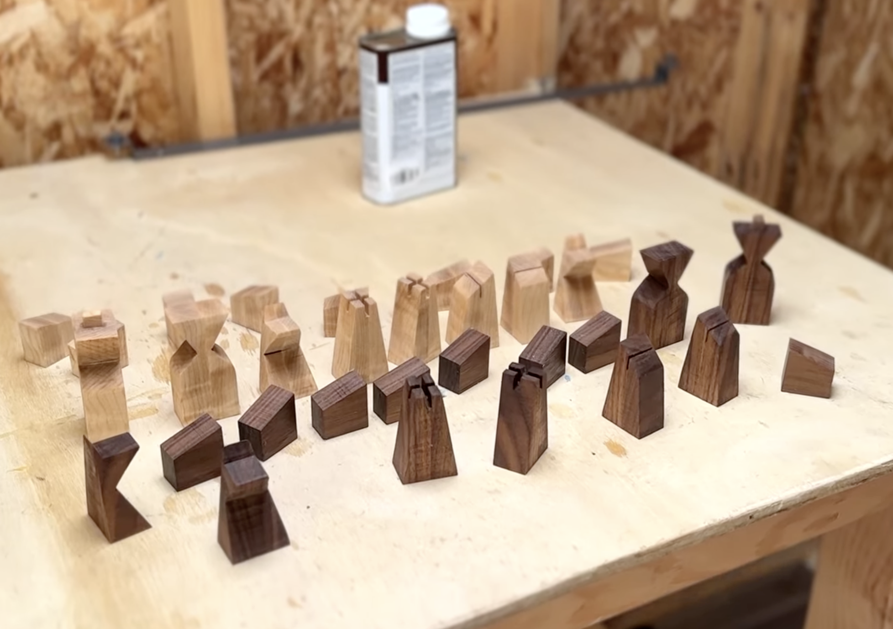
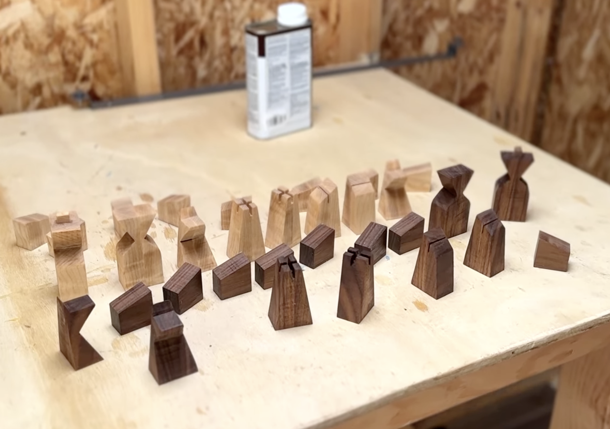
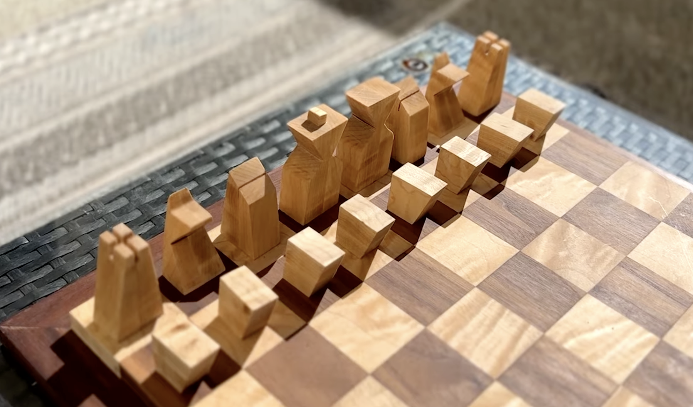
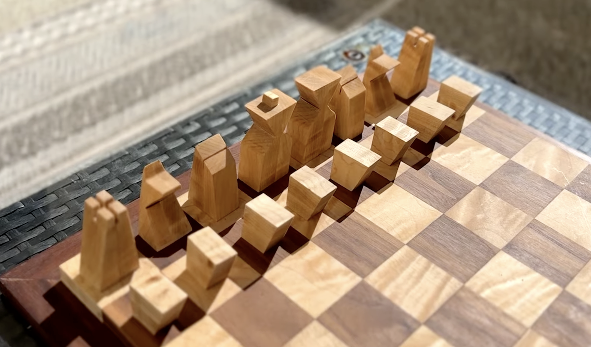

Minibuild: Chess Set

 

 

Overview
This chess set was designed and built as a wedding gift for my cousin, inspired by months of shared chess games and long discussions sparked by The Queen’s Gambit on Netflix. I designed and fabricated both the board and the pieces from scratch, focusing on balance, tactile feel, and durability rather than ornamentation. The project was a chance to slow down, work with my hands, and translate a shared interest into a physical object meant to last.